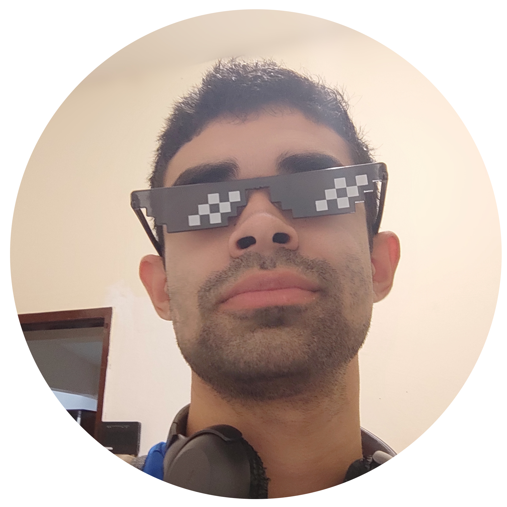
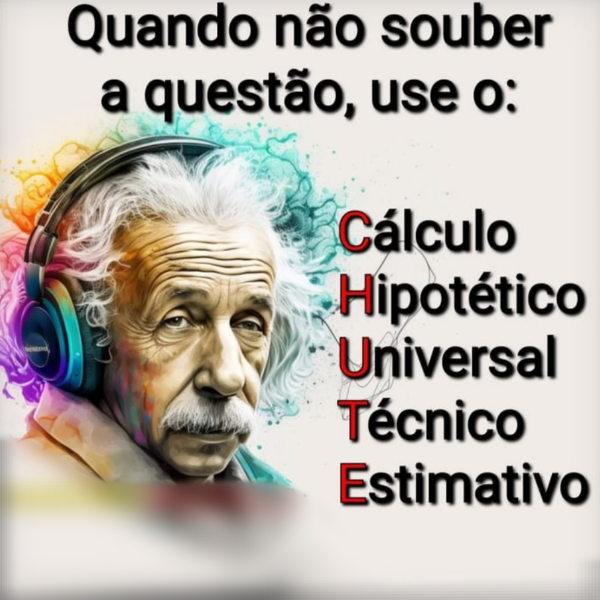
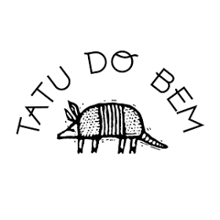

Sobre

Nascido em 98's, fui criado em uma fazenda, onde morei até os meus 20 anos de idade, sempre tive um forte contato com a natureza, cuidando dos animais e plantações.
Sou técnico de nível médio em informática pelo IFRN - campus Ceará-Mirim, onde participei de alguns projetos de pesquisa que fortaleceram minha base científica.
Já atuou como professor de robótica educacional e tecnologia sustentáveis, no ensino fundamental. Interesse tanto em fauna quanto flora, devido isso, escolheu o curso de ecologia.
e-mail: paulo.xavier.117@ufrn.edu.br

Nasci em 2007 (08/08), fui criado por minha mãe e avó, que sempre foram minha base e referência, me ensinando valores importantes desde cedo.
Concluí o ensino médio na Escola Presidente Roosevelt, onde construí minha formação e adquiri conhecimentos importantes para minha trajetória.
Sempre tive uma grande paixão por animais e pela natureza, com muito interesse por tudo que envolve o meio natural, o que reflete na minha forma de pensar e agir no dia a dia.
e-mail: edduhenrique9@gmail.com

Nascido em 2000, a Aquicultura sempre esteve presente na minha vida e âmbito familiar, de atividades de subexistência a cultivos variados, com ênfase em locais estuarinos.
Tenho formação técnica em Agropecuária (integrado ao ensino médio), Aquicultura e informática na Escola Agrícola de Jundiaí/UFRN, instituição pela qual tenho muito carinho e orgulho.
Tenho experiências teórica, prática e profissional nas áreas de Carcinicultura, e Ostreicultura, além de interesse em específico sobre assuntos correlacionados a área.
e-mail: vhitor1409@gmail.com
O que significa um portfólio na aprendizagem de Zoologia?
Na aprendizagem de Zoologia, este portfolio em formato de site torna-se uma forma de organizar e registrar não apenas os conteúdos estudados, como também o processo de construção do conhecimento ao longo da disciplina. Evidenciando dúvidas, descobertas e conexões feitas durante o estudo.
No site, o portfólio funciona como um espaço de reflexão sobre os temas abordados, especialmente os filos Platelmintos e Anelídeos, além de um pouco dos nematoda, destacando aspectos que chamaram atenção e contribuíram para uma compreensão mais ampla da diversidade e organização dos invertebrados. Assim, ele expressa a experiência de aprendizagem, valorizando o olhar crítico e o desenvolvimento ao longo do percurso.